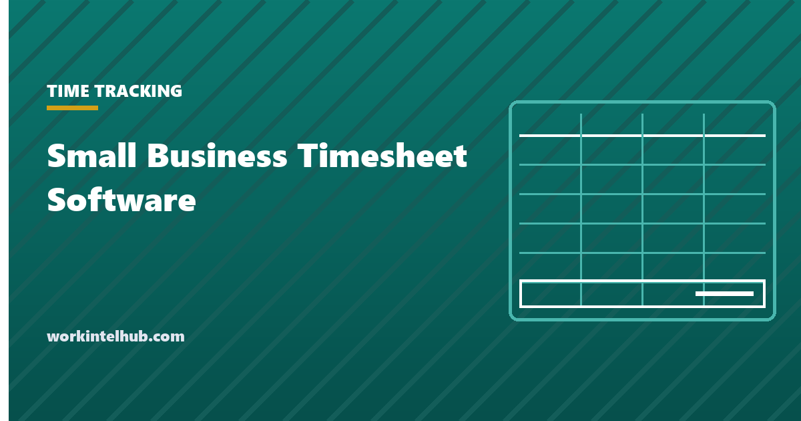

Small Business Timesheet Software

Timesheet products for small teams look almost identical on their feature pages. They differ in a handful of settings that no comparison table lists, and those settings decide whether the hours it produces are correct.
This is a buying guide rather than a ranking. We have not run these products across a payroll cycle, and a list of scores from someone who has not would not be worth anything. What follows is what to test and what to ask.
Work out what you are buying before you shop
Four different problems get solved by products that all call themselves timesheet software. Buying for the wrong one is the most common and most expensive mistake here.
| Problem | What you need | What you do not |
|---|---|---|
| Payroll takes too long | Approvals and a payroll export | Project codes, screenshots |
| We cannot cost jobs | Projects, tasks, billable flags | Clock-in hardware |
| Shift staff, multiple sites | Mobile clock-in, scheduling, offline | Deep project structure |
| We bill by the hour | Rates, invoicing, utilisation | Attendance policy features |
Write the sentence down before the first demo. If the problem is that timesheets arrive late, no product fixes it, and our page on why timesheets come in late covers what does.
The six settings that decide correctness
These are rarely on the pricing page and each one can produce wrong pay.
- Which way rounding defaults. Several products ship with quarter-hour rounding on. 29 CFR 785.48 requires rounding to run both directions and to come out even over time, so a default that happens to favour the employer is the same violation as a deliberate one. Find the setting; ideally turn it off.
- Whether the workweek start is configurable. Overtime is calculated per workweek, and the workweek is a fixed recurring 168 hours that you define. A product locked to Sunday when your week starts Thursday will compute overtime wrongly every period.
- Whether it calculates daily overtime. California, Alaska, Nevada and Colorado have daily thresholds. Four ten-hour days is forty hours and eight hours of daily overtime, and a weekly-only product reports zero.
- Whether an employee can see and export their own record. The single best predictor of how a rollout is received.
- What the payroll export looks like. Ask for a sample file and give it to whoever runs payroll before you buy.
- What you get back if you leave. Time records must be kept at least two years and payroll three. If export is a support ticket rather than a button, that is your retention plan failing.
Reading the pricing honestly
Per-user monthly pricing looks cheap at small headcounts and is not the number that matters.
Licence: =users * monthly * 12
Plus implementation: =setup_hours * loaded_hourly_cost
Plus the parallel run: one payroll cycle processed both ways
Against the manual cost: =admin_hours_per_period * periods * loaded_cost
Three things reliably inflate the licence line beyond the quote. Features you assumed were included sitting a tier up, most often approvals, overtime rules and the payroll integration. Minimum seat counts. And per-user pricing applied to seasonal staff you only employ part of the year.
Our page on timesheet automation works through the saving side, which is usually the administration and the corrections rather than the entry.
What to do in the trial
Most trials get spent looking at the interface. Spend it on the four cases that break products.
- An overnight shift. Enter 22:00 to 06:00 and check it returns eight hours, not a negative or a sixteen.
- A split week. Fifty hours in week one and thirty in week two of the same pay period. It should report ten hours of overtime, not zero.
- A correction after approval. Amend an approved entry and see whether there is an audit trail and what happens to the export.
- The real payroll export. Produce one and hand it to whoever runs payroll. This finds more problems than every other test combined.
Run all four with your own pay period dates rather than the demo data. Demo data is chosen not to expose these cases.
Moving from a spreadsheet without losing a payroll cycle
The migration is where small implementations go wrong, and the failure is almost always sequencing rather than the product.
- Start at the beginning of a pay period, never mid-period. A split period means reconciling two systems for the same week, which is precisely the work you bought the product to avoid.
- Run one full cycle in parallel. Enter the period in both the spreadsheet and the new product and compare totals per person before paying anyone from the new one. Discrepancies here are almost always a rounding default or the workweek start.
- Migrate people, not history. Keep the old files as the record for closed periods rather than importing them. Historic time records must be retained but they do not have to live in the new system.
- Set the rules before inviting users. Rounding, workweek start, overtime thresholds and approval routing. Changing them after entries exist creates recalculations that are hard to explain.
- Tell people what changes for them, in a paragraph. Usually it is where they enter time and when it is due, and nothing else.
The parallel run is the step most often skipped and the only one that reliably catches a misconfiguration before it reaches somebody's pay. One cycle is enough.
The feature to be deliberate about
Many timesheet products for small teams include screenshots, activity scoring or location capture, often enabled by default on the plan you buy.
Decide separately whether you want that, because it converts a payroll tool into a monitoring system with the obligations that follow. Four states now require written notice of electronic monitoring before it starts, and Maine additionally requires notice to be repeated annually. Our state-by-state guide covers the duty and the acknowledgement form covers the wording.
The practical advice is to switch those features off unless you have written down why you need them. A team that agreed to record its hours has not agreed to be screenshotted, and finding out that it was is the fastest way to lose a rollout.
Key takeaways
- Write down which of the four problems you are solving before the first demo. Buying for the wrong one is the expensive mistake.
- Check which way rounding defaults on day one. A default favouring the employer is the same violation as a deliberate one.
- Confirm the workweek start is configurable, or overtime will be wrong every period.
- Ask whether it calculates daily overtime. Weekly-only products report zero on four ten-hour days in California.
- Test an overnight shift, a split week, a post-approval correction and a real payroll export during the trial.
- Price the implementation and one parallel payroll run, not just the per-user licence.
- Turn off screenshots and activity scoring unless you have written down why you need them, and give notice if you keep them.
- Switch at the start of a pay period and run one cycle in parallel. It is the step most often skipped and the only one that catches a misconfiguration before payday.
Frequently asked questions
What should a small business look for in timesheet software?
Start from the problem: slow payroll needs approvals and a clean export, job costing needs projects and billable flags, shift work needs mobile and offline clock-in. Then check the settings that decide correctness: rounding default, configurable workweek start, daily overtime support, and whether employees can export their own records.
How much does timesheet software cost for a small business?
Per-user monthly pricing is the visible number and rarely the real one. Add implementation time, one payroll cycle run in parallel, and check whether approvals, overtime rules and the payroll integration sit a tier above the plan you were quoted. Minimum seat counts and seasonal staff also inflate the total.
Does timesheet software handle overtime correctly?
Not automatically. Overtime is calculated per workweek, so the product must let you set the workweek start to the day and time you actually use. If you employ in California, Alaska, Nevada or Colorado it also needs daily overtime rules, because four ten-hour days is forty hours plus eight hours of daily overtime.
What should I test during a timesheet software trial?
An overnight shift from 22:00 to 06:00, a pay period split fifty and thirty hours across two weeks, a correction made after approval, and a real payroll export handed to whoever runs payroll. Use your own pay period dates, because demo data is chosen not to expose these cases.
Do I need timesheet software or will a spreadsheet do?
A spreadsheet handles the arithmetic correctly up to roughly a dozen people on similar schedules. The break point is collection rather than calculation: chasing submissions, reconciling versions, and corrections arriving after payroll has run. Employing across state lines with different overtime rules is the other trigger.
Should timesheet software include screenshots or activity tracking?
Treat it as a separate decision from time tracking, because it converts a payroll tool into a monitoring system. Four states require written notice before electronic monitoring starts and Maine requires it annually. If you cannot write down why you need the capability, turn it off.
How do I switch from a spreadsheet to timesheet software?
Start at the beginning of a pay period, never mid-period, and run one full cycle in both systems before paying anyone from the new one. Set rounding, workweek start and overtime rules before inviting users, and keep the old files as the record for closed periods rather than importing history.
What happens to my time records if I stop using the software?
Ask before you buy. Time records must be kept at least two years and payroll records at least three, and longer under many state laws. If export is a support request rather than a self-service button, your retention obligation depends on a vendor's goodwill after you have stopped paying them.